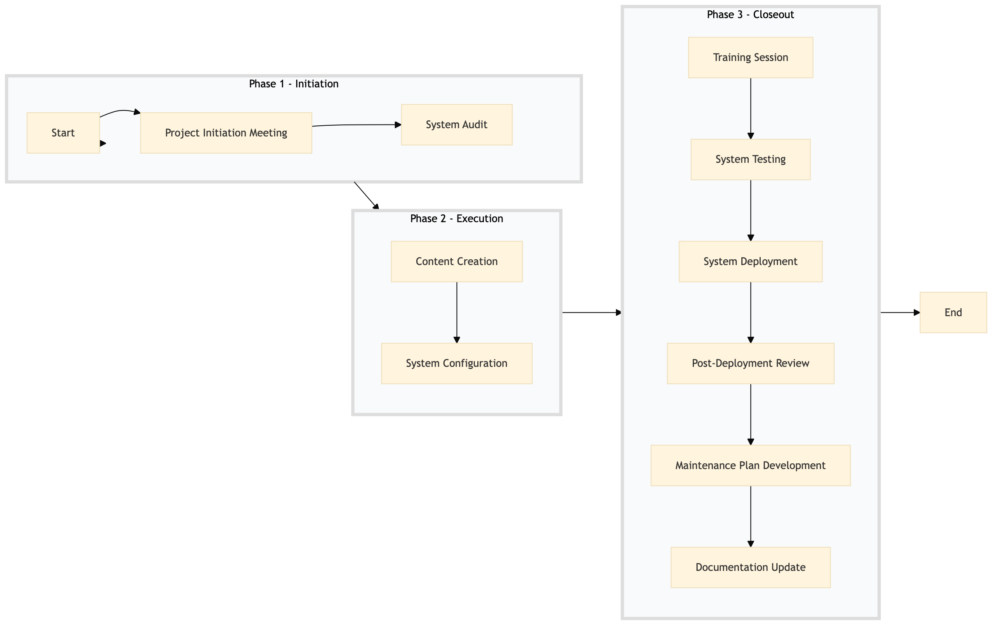

| Role | Steps |
|---|---|
| Digital Experience Manager | 1.1 3.4 3.5 |
| IT Manager | 1.2 3.6 |
| IT Specialist | 2.2 3.2 3.3 |
| Digital Content Specialist | 2.1 |
| Front Desk Agent | 3.1 |
| Housekeeping Staff | 3.1 |
| Step | Name | Role | System | Input | Output | KPI | Dec? | Exc? | Pain Point / Risk |
|---|---|---|---|---|---|---|---|---|---|
| 1.1 | Project Initiation Meeting | Digital Experience Manager | Oracle OPERA Cloud | Project scope document, stakeholder list | Project plan, timeline | Completion within 2 hours | N | Y | Coordination with multiple stakeholders |
| 1.2 | System Audit | IT Manager | Oracle OPERA Cloud, IDeaS G3 RMS | Current system status report | Audit report with recommendations | Completion within 1 day | N | Y | Integration issues between systems |
| 2.1 | Content Creation | Digital Content Specialist | Oracle OPERA Cloud, Knowcross HotSOS | Project plan, audit report | Digital content assets | Completion within 3 days | N | Y | Content quality and approval delays |
| 2.2 | System Configuration | IT Specialist | Oracle OPERA Cloud, SynXis CRS | Digital content assets, project plan | Configured digital signage systems | Completion within 2 days | N | Y | Technical challenges in system setup |
| 3.1 | Training Session | Front Desk Agent, Housekeeping Staff | Oracle OPERA Cloud | Configured digital signage systems | Trained staff | Completion within 1 day | N | Y | Staff adoption and training effectiveness |
| 3.2 | System Testing | IT Specialist | Oracle OPERA Cloud, IDeaS G3 RMS | Configured digital signage systems | Testing report with issues | Completion within 1 day | Y | Y | Identifying and resolving technical issues |
| 3.3 | System Deployment | IT Specialist | Oracle OPERA Cloud, SynXis CRS | Testing report with issues | Deployed digital signage systems | Completion within 1 day | N | Y | Deployment disruptions to hotel operations |
| 3.4 | Post-Deployment Review | Digital Experience Manager | Oracle OPERA Cloud, Knowcross HotSOS | Deployed digital signage systems | Review report with feedback | Completion within 1 week | N | Y | Gathering and analyzing guest feedback |
| 3.5 | Maintenance Plan Development | IT Manager | Oracle OPERA Cloud, IDeaS G3 RMS | Review report with feedback | Maintenance plan | Completion within 2 days | N | Y | Creating a comprehensive maintenance schedule |
| 3.6 | Documentation Update | IT Specialist | Oracle OPERA Cloud, SynXis CRS | Maintenance plan | Updated system documentation | Completion within 1 day | N | Y | Ensuring accurate and up-to-date documentation |
This process outlines the management of digital signage and wayfinding systems in a full-service Marriott hotel using Oracle OPERA Cloud PMS and other key Marriott systems.